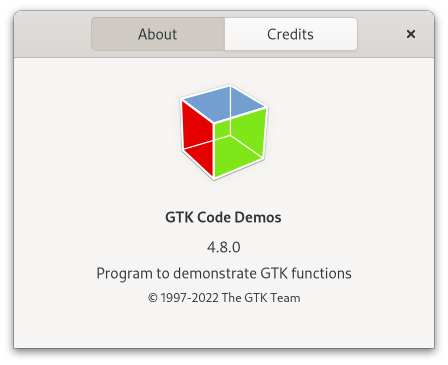

Gtk.AboutDialog¶
Example¶
- Subclasses
None
Methods¶
- Inherited
Gtk.Window (61), Gtk.Widget (180), GObject.Object (37), Gtk.Accessible (15), Gtk.Buildable (1), Gtk.Native (6), Gtk.Root (3)
- Structs
class |
|
|
|
|
|
|
|
|
|
|
|
|
|
|
|
|
|
|
|
|
|
|
|
|
|
|
|
|
|
|
|
|
|
|
|
|
|
|
|
|
|
|
|
|
|
|
|
|
Virtual Methods¶
Properties¶
- Inherited
Name |
Type |
Flags |
Short Description |
|---|---|---|---|
[ |
r/w/en |
||
[ |
r/w/en |
||
r/w/en |
|||
r/w/en |
|||
[ |
r/w/en |
||
r/w/en |
|||
r/w/en |
|||
r/w/en |
|||
r/w/en |
|||
r/w/en |
|||
r/w/en |
|||
r/w/en |
|||
r/w/en |
|||
r/w/en |
|||
r/w/en |
|||
r/w/en |
Signals¶
- Inherited
Name |
Short Description |
|---|---|
Emitted every time a URL is activated. |
Fields¶
- Inherited
Class Details¶
- class Gtk.AboutDialog(*args, **kwargs)¶
- Bases
- Abstract
No
The
GtkAboutDialogoffers a simple way to display information about a program.The shown information includes the programs’ logo, name, copyright, website and license. It is also possible to give credits to the authors, documenters, translators and artists who have worked on the program.
An about dialog is typically opened when the user selects the
Aboutoption from theHelpmenu. All parts of the dialog are optional.An example
Gtk.AboutDialogAbout dialogs often contain links and email addresses.
GtkAboutDialogdisplays these as clickable links. By default, it calls [method`Gtk`.FileLauncher.launch] when a user clicks one. The behaviour can be overridden with the [signal`Gtk`.AboutDialog::activate-link] signal.To specify a person with an email address, use a string like
Edgar Allan Poe <edgar@poe.com>. To specify a website with a title, use a string likeGTK team https://www.gtk.org.To make constructing a
GtkAboutDialogas convenient as possible, you can use the function [func`Gtk`.show_about_dialog] which constructs and shows a dialog and keeps it around so that it can be shown again.Note that GTK sets a default title of
_("About %s")on the dialog window (where%sis replaced by the name of the application, but in order to ensure proper translation of the title, applications should set the title property explicitly when constructing aGtkAboutDialog, as shown in the following example:```c
Gio.File*logo_file =Gio.File.new_for_path(“./logo.png”);Gdk.Texture*example_logo =Gdk.Texture.new_from_file(logo_file,None);GObject.Object.unref(logo_file);gtk_show_about_dialog (
None, “program-name”, “ExampleCode”, “logo”, example_logo, “title”, _(“About ExampleCode”),None); ```- CSS nodes
GtkAboutDialoghas a single CSS node with the namewindowand style class.aboutdialog.- classmethod new()[source]¶
- Returns
a newly created
GtkAboutDialog- Return type
Creates a new
GtkAboutDialog.
- add_credit_section(section_name, people)[source]¶
- Parameters
Creates a new section in the “Credits” page.
- get_artists()[source]¶
- Returns
A
NULL-terminated string array containing the artists- Return type
[
str]
Returns the names of the artists which are displayed in the credits page.
- get_authors()[source]¶
- Returns
A
NULL-terminated string array containing the authors- Return type
[
str]
Returns the names of the authors which are displayed in the credits page.
- get_documenters()[source]¶
- Returns
A
NULL-terminated string array containing the documenters- Return type
[
str]
Returns the name of the documenters which are displayed in the credits page.
- get_license_type()[source]¶
- Returns
a [enum`Gtk`.License] value
- Return type
Retrieves the license type.
- get_logo()[source]¶
- Returns
the paintable displayed as logo or
NULLif the logo is unset or has been set via [method`Gtk`.AboutDialog.set_logo_icon_name]- Return type
Returns the paintable displayed as logo in the about dialog.
- get_logo_icon_name()[source]¶
- Returns
the icon name displayed as logo, or
NULLif the logo has been set via [method`Gtk`.AboutDialog.set_logo]- Return type
Returns the icon name displayed as logo in the about dialog.
- get_translator_credits()[source]¶
-
Returns the translator credits string which is displayed in the credits page.
- get_wrap_license()[source]¶
- Returns
TRUEif the license text is wrapped- Return type
Returns whether the license text in the about dialog is automatically wrapped.
- set_artists(artists)[source]¶
- Parameters
artists ([
str]) – the authors of the artwork of the application
Sets the names of the artists to be displayed in the “Credits” page.
- set_authors(authors)[source]¶
- Parameters
authors ([
str]) – the authors of the application
Sets the names of the authors which are displayed in the “Credits” page of the about dialog.
- set_comments(comments)[source]¶
-
Sets the comments string to display in the about dialog.
This should be a short string of one or two lines.
- set_copyright(copyright)[source]¶
-
Sets the copyright string to display in the about dialog.
This should be a short string of one or two lines.
- set_documenters(documenters)[source]¶
- Parameters
documenters ([
str]) – the authors of the documentation of the application
Sets the names of the documenters which are displayed in the “Credits” page.
- set_license(license)[source]¶
-
Sets the license information to be displayed in the about dialog.
If
licenseisNULL, the license page is hidden.
- set_license_type(license_type)[source]¶
- Parameters
license_type (
Gtk.License) – the type of license
Sets the license of the application showing the about dialog from a list of known licenses.
This function overrides the license set using [method`Gtk`.AboutDialog.set_license].
- set_logo(logo)[source]¶
- Parameters
logo (
Gdk.PaintableorNone) – aGdkPaintable
Sets the logo in the about dialog.
- set_logo_icon_name(icon_name)[source]¶
-
Sets the icon name to be displayed as logo in the about dialog.
- set_program_name(name)[source]¶
-
Sets the name to display in the about dialog.
If
nameis not set, the string returned byg_get_application_name()is used.
- set_system_information(system_information)[source]¶
-
Sets the system information to be displayed in the about dialog.
If
system_informationisNULL, the system information page is hidden.See [property`Gtk`.AboutDialog:system-information].
- set_translator_credits(translator_credits)[source]¶
-
Sets the translator credits string which is displayed in the credits page.
The intended use for this string is to display the translator of the language which is currently used in the user interface. Using
gettext(), a simple way to achieve that is to mark the string for translation:``c GtkWidget *about = gtk_about_dialog_new ();
- gtk_about_dialog_set_translator_credits (GTK_ABOUT_DIALOG (about),
_(“translator-credits”));
It is a good idea to use the customary
msgid“translator-credits” for this purpose, since translators will already know the purpose of thatmsgid, and sinceGtkAboutDialogwill detect if “translator-credits” is untranslated and omit translator credits.
Signal Details¶
- Gtk.AboutDialog.signals.activate_link(about_dialog, uri)¶
- Signal Name
activate-link- Flags
- Parameters
about_dialog (
Gtk.AboutDialog) – The object which received the signaluri (
str) – the URI that is activated
- Returns
TRUEif the link has been activated- Return type
Emitted every time a URL is activated.
Applications may connect to it to override the default behaviour, which is to call [method`Gtk`.FileLauncher.launch].
Property Details¶
- Gtk.AboutDialog.props.artists¶
- Name
artists- Type
[
str]- Default Value
[]- Flags
The people who contributed artwork to the program, as a
NULL-terminated array of strings.Each string may contain email addresses and URLs, which will be displayed as links.
- Gtk.AboutDialog.props.authors¶
- Name
authors- Type
[
str]- Default Value
[]- Flags
The authors of the program, as a
NULL-terminated array of strings.Each string may contain email addresses and URLs, which will be displayed as links, see the introduction for more details.
- Gtk.AboutDialog.props.comments¶
- Name
comments- Type
- Default Value
- Flags
Comments about the program.
This string is displayed in a label in the main dialog, thus it should be a short explanation of the main purpose of the program, not a detailed list of features.
- Gtk.AboutDialog.props.copyright¶
- Name
copyright- Type
- Default Value
- Flags
Copyright information for the program.
- Gtk.AboutDialog.props.documenters¶
- Name
documenters- Type
[
str]- Default Value
[]- Flags
The people documenting the program, as a
NULL-terminated array of strings.Each string may contain email addresses and URLs, which will be displayed as links, see the introduction for more details.
- Gtk.AboutDialog.props.license¶
- Name
license- Type
- Default Value
- Flags
The license of the program, as free-form text.
This string is displayed in a text view in a secondary dialog, therefore it is fine to use a long multi-paragraph text. Note that the text is only wrapped in the text view if the “wrap-license” property is set to
TRUE; otherwise the text itself must contain the intended linebreaks.When setting this property to a non-
NULLvalue, the [property`Gtk`.AboutDialog:license-type] property is set toGTK_LICENSE_CUSTOMas a side effect.The text may contain links in this format
<http://www.some.place/>and email references in the form<mail-to@some.body>, and these will be converted into clickable links.
- Gtk.AboutDialog.props.license_type¶
- Name
license-type- Type
- Default Value
- Flags
The license of the program.
The
GtkAboutDialogwill automatically fill out a standard disclaimer and link the user to the appropriate online resource for the license text.If
GTK_LICENSE_UNKNOWNis used, the link used will be the same specified in the [property`Gtk`.AboutDialog:website] property.If
GTK_LICENSE_CUSTOMis used, the current contents of the [property`Gtk`.AboutDialog:license] property are used.For any other [enum`Gtk`.License] value, the contents of the [property`Gtk`.AboutDialog:license] property are also set by this property as a side effect.
- Gtk.AboutDialog.props.logo¶
- Name
logo- Type
- Default Value
- Flags
A logo for the about box.
If it is
NULL, the default window icon set with [id`gtk_window_set_default_icon_name`] will be used.
- Gtk.AboutDialog.props.logo_icon_name¶
- Name
logo-icon-name- Type
- Default Value
- Flags
A named icon to use as the logo for the about box.
This property overrides the [property`Gtk`.AboutDialog:logo] property.
- Gtk.AboutDialog.props.program_name¶
- Name
program-name- Type
- Default Value
- Flags
The name of the program.
If this is not set, it defaults to the value returned by
g_get_application_name().
- Gtk.AboutDialog.props.system_information¶
- Name
system-information- Type
- Default Value
- Flags
Information about the system on which the program is running.
This information is displayed in a separate page, therefore it is fine to use a long multi-paragraph text. Note that the text should contain the intended linebreaks.
The text may contain links in this format
<http://www.some.place/>and email references in the form<mail-to@some.body>, and these will be converted into clickable links.
- Gtk.AboutDialog.props.translator_credits¶
- Name
translator-credits- Type
- Default Value
- Flags
Credits to the translators.
This string should be marked as translatable.
The string may contain email addresses and URLs, which will be displayed as links, see the introduction for more details.
- Gtk.AboutDialog.props.version¶
- Name
version- Type
- Default Value
- Flags
The version of the program.
- Gtk.AboutDialog.props.website¶
- Name
website- Type
- Default Value
- Flags
The URL for the link to the website of the program.
This should be a string starting with
http://orhttps://.
- Gtk.AboutDialog.props.website_label¶
- Name
website-label- Type
- Default Value
- Flags
The label for the link to the website of the program.